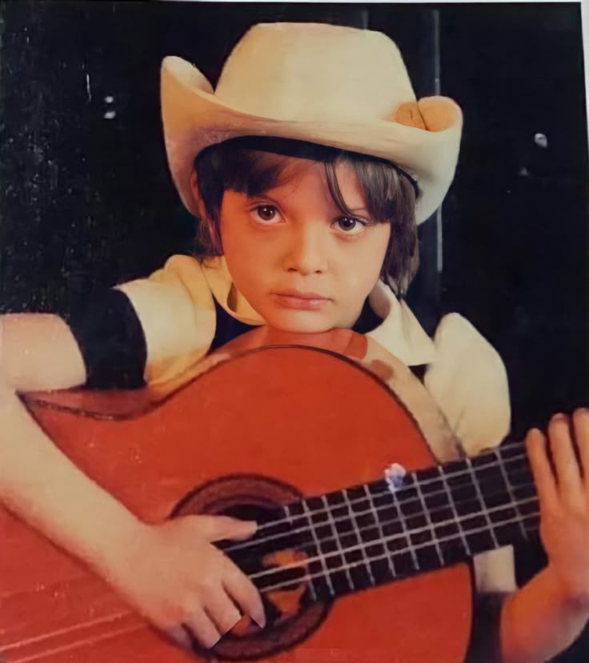

"MICKY"
Reconocido por su estilo vocal, presencia escénica y versatilidad musical, es uno de los artistas más exitosos de Latinoamérica, lo que le otorgó el apodo honorífico de el Sol de México.
Luis Miguel Gallego Basteri (San Juan, 19 de abril de 1970), conocido como Luis Miguel, es un cantante y productor mexicano. Nacido en Puerto Rico, es hijo de madre italiana y padre español. Durante su infancia, emigró junto a su familia a México, país donde más tarde adquirió la nacionalidad en 1991.

Reconocido por su estilo vocal, presencia escénica y versatilidad musical, es uno de los artistas más exitosos de Latinoamérica, lo que le otorgó el apodo honorífico de el Sol de México.